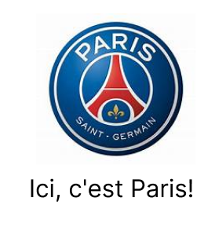

PSG was founded in 1970 during the merger between the football section of Stade Saint-Germois, founded in 1904, and Paris FC, a club without a stadium or team. In 1972, the club was split into two: Paris FC which kept the squad and professional status and the Parc des Princes stadium. In 1974, Paris FC was relegated to the second division while PSG returned to the first division and the Parc des Princes. PSG is bought by Canal+ which leads the club to great success.

Club president :
Nasser Al-Khelaïfi
He has been president since November 4, 2011.

Trainer:
Luis Enrique
He has been a coach since 2023.
| National competitions |
|---|
| French Championship: Champion in 1986, 1994, 2013, 2014, 2015, 2016, 2018, 2019, 2020, 2022, 2023. |
| Vice-Champion: 1989, 1993, 1996, 1997, 2000, 2004, 2012, 2017, 2021 |
| French Cup: Winner: 1982, 1983, 1995, 1998, 2004, 2006, 2010, 2015, 2016, 2017, 2018, 2020, 2021 |
| Finalist 1985, 2003, 2008, 2011, 2019 |
| Champions Trophy: Winner: 1995, 1998, 2013, 2014, 2015, 2016, 2017, 2018, 2019, 2020, 2022. |
| Finalist: 1986, 2004, 2006, 2010, 2021 |
| League Cup: Winner: 1995, 1998, 2008, 2014, 2015, 2016, 2017, 2018, 2020 |
| Runner-up: 2000 |
| French division 2 championship: 1971 champion |
| International competitions |
|---|
| Champions League finalist 2020 |
| Cup Winners' Cup: winner: 1996 |
| Finalist: 1997 |
| UEFA Cup: 1993 semi-finalist |
| UEFA Super Cup: 1996 runner-up |
| Intertoto Cup: winner in 2001 |